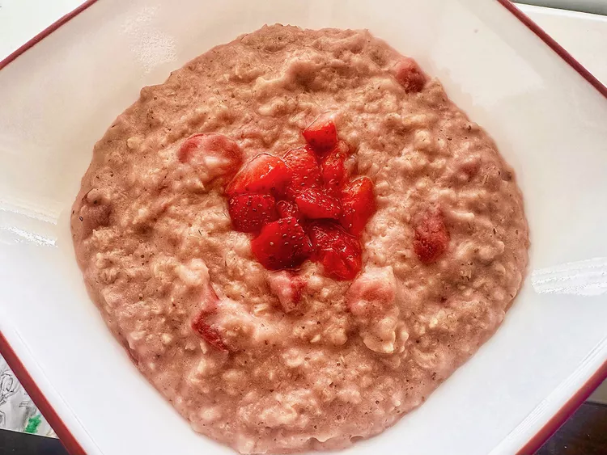

Strawberries and Cream Oatmeal

Description
The breakfast of champions. Oatmeal is a staple breakfast due to being high
in fiber and being a quick and easy thing to make in the morning.
Ingredients
- diced strawberries
- milk
- water
- brown sugar
- salt
- oatmeal
- vanilla extract
Steps
- Blend strawberries, milk, water, brown sugar, and salt in a blender and blend until smooth.
- Place oatmeal and strawberry mixture into a saucepan.
- Bring to a boil.
- Reduce the heat, add remaining strawberries, and simmer until thick, about 5 minutes.
- Remove from heat.
- Stir in vanilla.